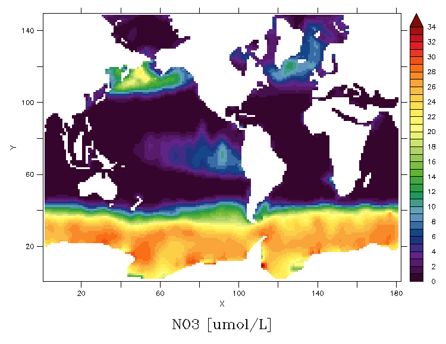
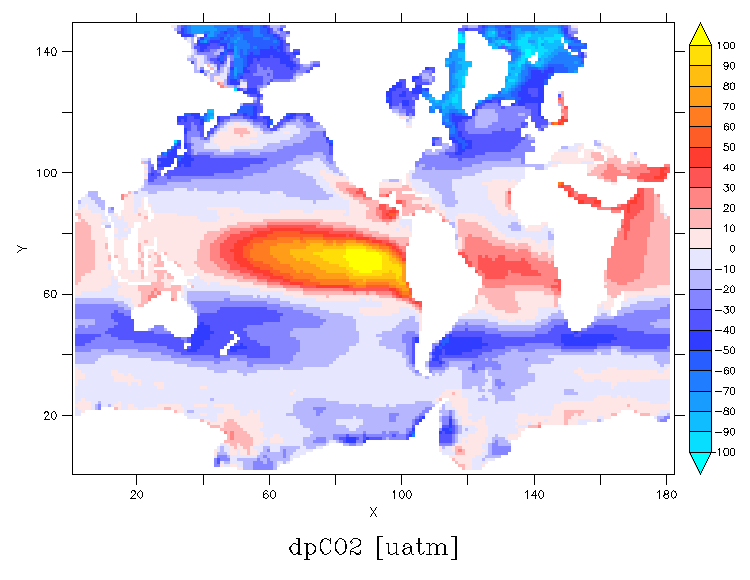

Use the tabs below to view details on this model run.
Ecosystem global summary
Cflx monthly regional plots
Chlorophyll monthly regional plots
Ecosystem annual mean maps
Model run
Observations
Difference (model - obs.)
PFTs global summary
PFTs annual mean maps
Phytoplankton
Zooplankton
Nutrients global summary
Nutrients annual mean maps and comparison to observations
Model run
Observations
Difference (model - obs.)

pCO2 monthly regional plots
pCO2 monthly regional plots (normalised)
dpCO2 annual mean map (average over the year)
Model run
Observations (data products: 2010-2019 ave)
Difference (model - obs.)

Physics global summary
Sea surface temperature monthly regional plots
Mixed layer depth monthly regional plots
Physics annual mean maps
Model run
Observations
Difference (model - obs.)
Ecosystem vertical depth profile
PFTs vertical depth profile
Nutrients vertical depth profile
Organic carbon vertical depth profile
Physics vertical depth profile
Observation data
The observation value for total chlorohpyll is determined by calculating a global average from the OCCCI version 5 monthly climatology dataset. This data is also used to create the maps and calculate the difference to the model.
The observation values for nutrients (phosphate, nitrates, silica, and oxygen) are determined by calculating a global average from the World Ocean Atlas 2018 annual datasets. These datasets are also used for creating the observation maps and calculating the difference to the model output.
The observation values for pCO2 are calculated from an ensemble mean of the data-products from the Global Carbon Budget 2022. This data is also used for creating the observation map for dpCO2 and calculating the difference to the model output.
The observation data for the physics tracers used to create maps and calculate the difference to the model output is taken from the World Ocean Atlas 2018 annual datasets. We use the dataset for the period 2005-2018 for our comparison.